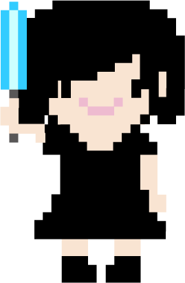

テ レ ビ
パソコンやスマホでyoutubeが見れない..!となると代わりとなり見るのはテレビ。でも最近のテレビ番組は面白くないと思ってしまう。それはなぜだろうか。ゴールデンタイムに最も放送されているのがバラエティ番組。 しかし、このバラエティ番組の面白さを、ジェネレーションギャップを理由に理解できない人が増えている。
最近、バラエティ番組にメインで出演している芸能人の平均年齢は30代中盤くらい。 現代の若者とは大きく年齢に開きがあり、これまで見てきたものが違うため、ジェネレーションギャップが生じている。例えば、当時流行したヒットメドレーやプロレスラーのモノマネをしても、若者世代はその存在を知らないため、温度差がでて、面白さを理解できないそう。だから今の若者は、同じ若者が配信しているYouTubeを見るのかなと思った。
そ う じ
課題も手につかないしテレビも面白くないな~と思ったらついつい掃除をしてしまう。ネットが使えなくても音楽は聞けるので曲をかけな がらやっていたらだいぶ部屋が綺麗に!ほぼ毎日掃除をしてたけど1日経つだけでもそれなりに汚れることに気づいた。今までは一週間に一回くらいしかやってなかったけどこれからはなるべく毎日掃除しようと思う。今までも掃除をしている間にLINEがきてないかとかチャックしていたので、ぶっ続けで掃除をするということは思えばないなと思い、どれだけ私はスマホに依存していたのかと実感した。
バ イ ト
バイト中スマホみたい!とは日頃から思ったことないので困らなかった。飲食業などネットを使わなくて済む職業なら、働いてればオフラインで困ることはまずない。しかし私のバイト先は仕事が終わったらみんなで一杯飲むので、その時いつもスマホチェックをしているのでついついいじってしまいたくなる。これは癖みたいなもので、たった数日オフラインで過ごしただけでは癖というものはなかなか抜けないと感じた。
ラ イ ブ

ライブ会場にいくまでに電車移動だったのだが、慣れないところにいったので事前に調べてはいたけれど迷った。こういったときオフラインだとスマホで調べたりできないのでなんとかなったもののとても困った。少し前まではGoogleマップもなかったし、スマホで電車の乗り換えを調べるということができなかったと考えると、いまの世の中とても便利になったと感じた。また、スマホがなかったときどのようにして目的地目指していき、実際今と昔どちらのほうが簡単にいけるのか気になった。ライブの時はスマホを使うことは今回行ったところは写真撮影オッケーのところだったのでカメラ機能以外使うことはなかったが、改めて考えるとスマホというのはカメラ機能もあり音楽も聴け、時間もわかる…オフラインでは使える機能が減るとはいえとても万能だと感じた。
課 題
普段課題とかやっている途中でもTwitterを見たりしてしまうけどそういったことができない環境での作業だととても捗る。しかし困るとすれば、何か制作物の参考になる資料をネットで探すことができないこと。日頃から紙での資料とかももっと集めねばいけないなというか、もしものためにもあったほうが良いなと感じた。あとはもっと自分の中にもっと様々なことをインプットさせることが必要と感じた。新たな課題発見!
10日間オフラインで過ごす中で、やらなければいけないことを考えることができたし、実際今まで以上に作業効率はオフラインの方がよくなると感じた。しかし、やらなければいけないことがあってもどうしてもやる気が起きない時がある。そういったとき普段であればとくに意味もなくネットサーフィンをして気を紛らわしていたのだが、それができないとなると暇になる。気分転換が必要な時やちょっとした娯楽にスマホを使っていたので、それができないとなると自分としてはストレスに感じた。また、とても時間が長く感じて苦痛だった。意外と余裕だと感じていたけれど、10日間オフラインで生活する中でひまだと感じたのは、ちょうど折り返し地点のときで、スマホをさわりたいという禁断症状がでてきた。数年ずっと使い続けてあたりまえにあったものを押さえつけると自分でも気づかないくらいストレスになっているのかと思った。
趣 味
むかしはよくやっていた趣味であるお菓子作りを久しぶりにやった。お菓子を作る時クックパッドを使ったりするが、オフラインだと使えないので難しいものは作れなかった。レシピ本は持っているので困るということはないけれど、その本にのってない新しいお菓子のレシピはできないのでそれは残念だと感じた。しかし、クックパッドには確かにたくさんのレシピがあるけれど、人気のレシピをランキング順に見るには課金しなくてはいけないし、そもそも素人レシピなのでへたなレシピだと全く美味しくないし、探すのにも時間がかかるので、確実に失敗しないという点では断然本の方が良いのかなとは思った。とはいえやはり本はかさばり置き場所に困ったりもするので手軽さで言ったらクックパッドなどのサイトだとは思うので、どちらもメリット・デメリットはあるとは思う。
読 書
スマホに依存気味で、年々読書する機会というのが減ったので、この機会に久しぶりに本を読んだが、オンラインのときだとついつい読んでる間にもスマホとかをいじってしまうし、集中して読むという環境ではなかった。
しかし、スマホを使わないと決めてしまえば自分が思ってた以上に本に集中することができた。
中学生のときが一番本を読んでいて、１日2冊はよんでいたので、その時にくらべると本を読むスピードがとても遅くなっていて、続けていたことをやめてしまうと衰えるのはあっという間だと感じた。
なぜ自分が読書をしなくなったかと思った時スマホが原因かなとずっと思っていたけど、よくよく振り返ったら単純に忙しいからというのが原因かと思った。高校は部活三昧だったし、大学はバイトに課題…。
世間での読書離れの原因は何かと調べたところ、多くの大学関係者が読書離れの原因と指摘するのは、大学生の忙しさ。最近は大学が授業の出欠を厳しくチェックする傾向が強いこともあって、まじめに出席する学生が多い。加えて、生活費などの足しにしようとアルバイトに精を出す人が増え、「読書をする時間がない」という。
最近は何か悪いことがあるとすぐスマホが原因だーと騒ぐけど、実際どうなのかしっかり見極めるべきだと感じた。